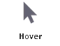
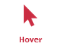
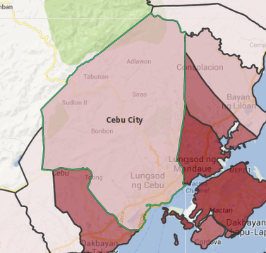

Selection of analytical unit on hover
This interactive way of unit selection is enabled by activation of the hover tool in the map tools panel.

If the hover tool is activated, the icon turns red. You can interactively select the unit by hovering the mouse over it in the map, the tree of analytical units or in any chart or table.
The selected unit is highlighted by the current selection color and also labeled in the map.

Please be aware that this is only a temporal selection, which changes with every move of the mouse over another analytical unit.
The hover selection mode can be deactivated by another click on the icon.